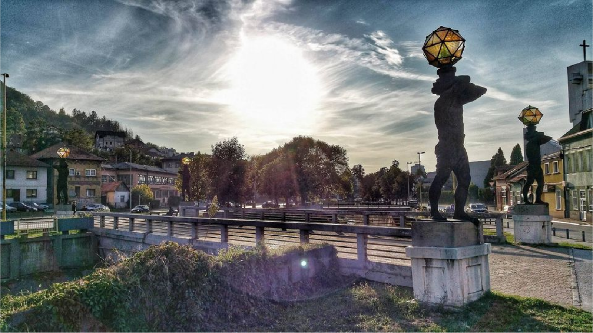
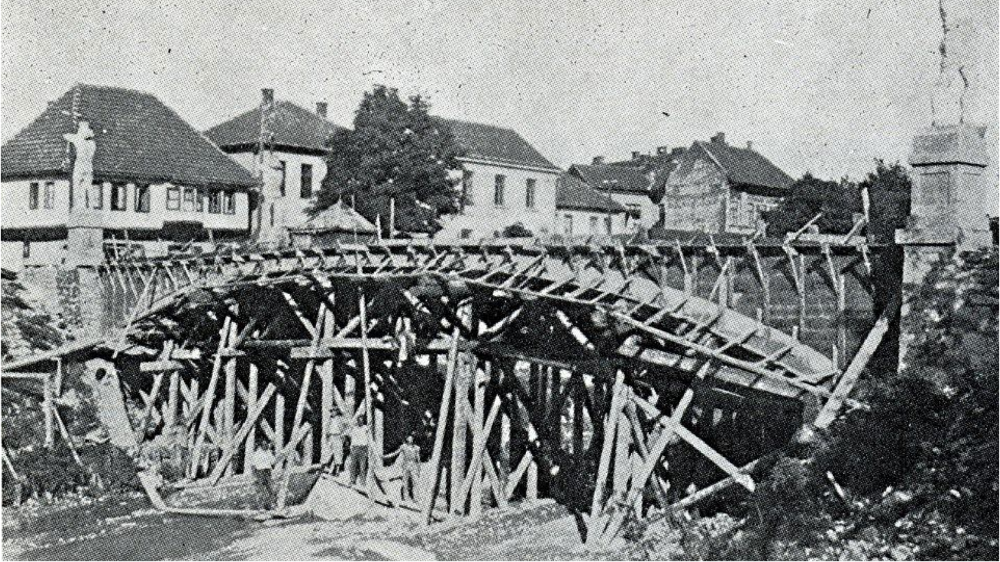

Digitalni arhiv grada soli
Istraži Tuzlu
Otkrij historiju grada soli kroz generator arhivskih činjenica, interaktivni slider poređenja fotografija i kviz koji testira tvoje znanje o Tuzli.
Arhivske tajne
Svaki klik otkriva drugu malu historijsku činjenicu iz arhiva.
Klikni na dugme i istraži arhivske tajne...
Prije i Poslije
Povuci liniju lijevo-desno da vidiš kako se Tuzla mijenjala kroz godine.


Znamenitosti
Most s kipovima
2024. godine se navršilo 90 godina otkako postoji most “Kipovi” u Tuzli. Za devet decenija postojanja, most je saniran nekoliko puta ali ove godine je doživio veću rekonstrukciju. Kipovi koje je svorio vrhunski kipar Franjo Leder su postavljeni 1936. godine. Prema nekim izvorima prvi je to betonski most građen u Tuzli, projektovao ga je arhitekta Bogdan Đukić, a njegova gradnja počela je 1935. godine.
Kviz: koliko znaš o Tuzli?
Šest pitanja, šest šansi da dokažeš da si pravi poznavalac grada soli.
Pitanje 1 od 6
Šta znači ime "Tuzla" na turskom jeziku?
Pitanje 2 od 6
Koje godine je sagrađena česma na Skveru, danas zaštićeni kulturno-historijski spomenik?
Pitanje 3 od 6
Pod kojim imenom je Tuzla bila poznata u periodu Bosanske kraljevine?
Pitanje 4 od 6
Panonska jezera u Tuzli nastala su na mjestu nekadašnjih…
Pitanje 5 od 6
Po kome je nazvana Narodna i univerzitetska biblioteka u Tuzli?
Pitanje 6 od 6